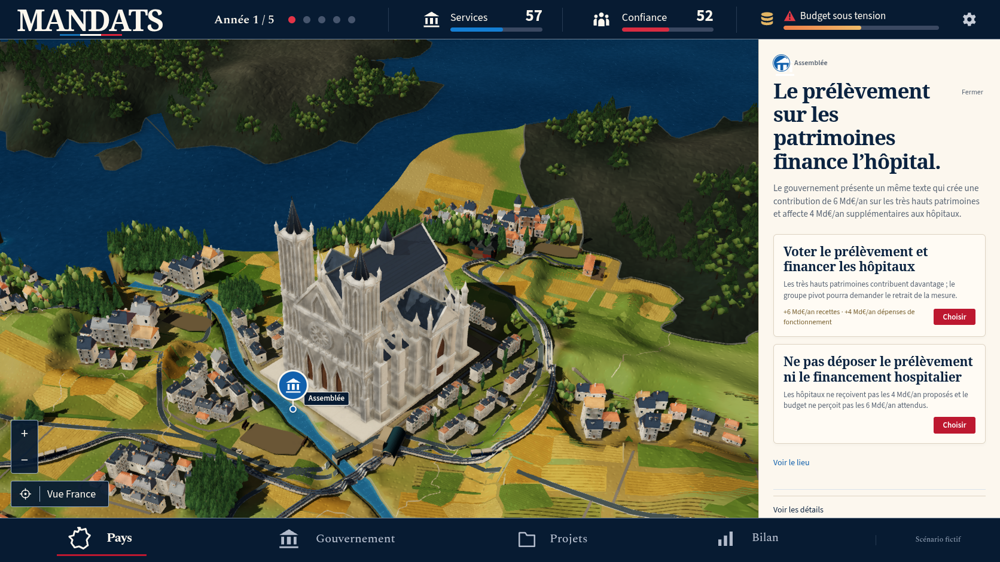
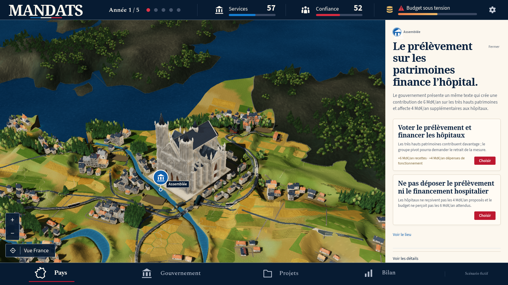
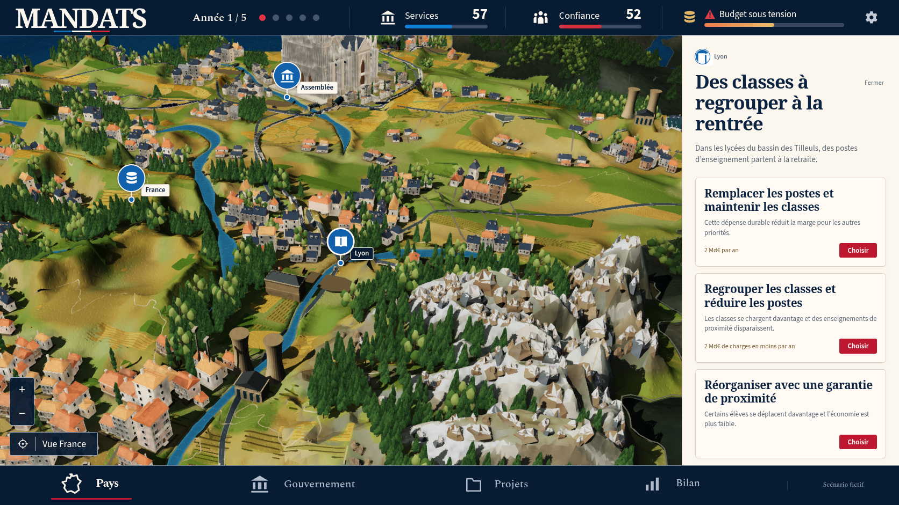
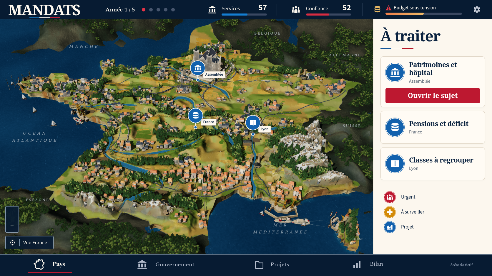

Passe 36 : Non conforme à la maquette
La référence confirmée et le jeu réel
Les voiles blanches, les rues plus claires, les onze petits groupes agricoles et les parcelles plus fines améliorent le rendu 36. La carte reste non conforme à la référence : grands pans de falaises et de montagnes, contexte massif, plaines encore clairsemées et cathédrale grise trop massive. Le premier contrôle desktop des modèles retenus échoue au délai original de 15 secondes ; les suites suivantes ne sont pas exécutées.
7 vues réelles, Chromium 151.0.7922.173, 1672 × 941, DPR 1, zéro décision. Erreurs JavaScript : 0 ; requêtes échouées : 0 ; erreurs HTTP : 0 ; avertissements console : 0 ; erreurs console : 0.
Référence confirmée

Vue nationale réelle

Vue nationale36 : voiles blanches et petits groupes agricoles visibles ; plaines encore clairsemées, rivages et massifs trop grossiers face à la référence.
Conditions et actions · Entrées de partieParis


Paris36 : les pointes gothiques se lisent, mais le corps de pierre gris, le toit massif et le tissu urbain restent différents de la miniature chaude et fine de la maquette.
Conditions et actions · Entrées de partieSeine et berges


Seine et berges36 : rues plus claires et parcelles plus fines ; de grandes surfaces et le contexte voisin conservent une lecture simplifiée.
Conditions et actions · Entrées de partieLyon et Alpes


Lyon et Alpes36 : neige et canopées sont visibles, mais les grands pans minéraux continus et les transitions de versants restent trop anguleux.
Conditions et actions · Entrées de partieRetour national


Retour national36 par les contrôles natifs, zéro décision. La nouvelle densité rurale progresse sans atteindre la richesse de la référence.
Conditions et actions · Entrées de partieÉcarts observés
- La référence canonique et les cinq vues 36 ont été effectivement examinées. La référence originale est conservée sans modification.
- Les voiles blanches se lisent maintenant sur la mer ; les rues et les façades gagnent de la lumière. Les ports, bateaux et rivages ne retrouvent pas la richesse et la composition de la maquette.
- Les onze groupes agricoles et le grain plus fin des parcelles ajoutent des petites toitures dans les plaines du nord-est et du centre. De larges espaces restent toutefois moins habités et variés que dans la référence.
- Les falaises gardent de grands pans anguleux. Les Alpes et les Pyrénées restent organisées en masses et fronts continus, avec des facettes de grande taille et des transitions trop abruptes.
- Le contexte voisin conserve des masses de terrain arrondies et épaisses. Il attire encore le regard au lieu de former le cadre discret et détaillé de la référence.
- La cathédrale conserve des pointes gothiques lisibles, mais son corps gris massif, son grand toit et les maisons voisines ne reproduisent pas le monument chaud et fin de la maquette.
- L’en-tête bleu nuit, le panneau ivoire et les titres serif restent proches de la direction artistique. Ils ne valident pas la fidélité de la carte.
- Le retour national utilise les contrôles natifs, zéro décision dépensée. Les sept captures et neuf PNG décodées ne prouvent ni les reprises de sauvegarde, ni un readback GPU des matières, ni une cadence FPS.
- Le check complet 1082 et les gardes physiques réellement exécutées sur 781 maisons passent. Le test desktop original des modèles retenus échoue à sa première attente après leur libération : data-renderer reste loading au bout de 15000ms, ligne 521. Le scénario HTTP 503, la sauvegarde rechargée, WebKit DPR2 et les quatre suites complètes 36 restent non exécutés.
Preuves de capture · Build réellement servi · Revue enregistrée